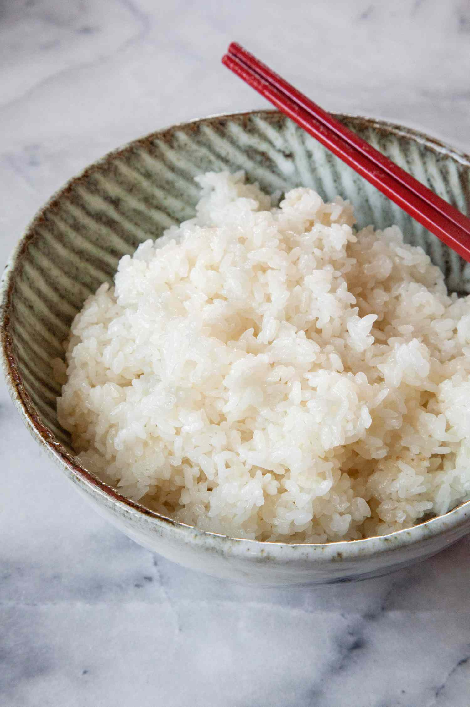

Return
Sushi Rice Recipe

Description of dish:
Sushi Rice is a short-grained white rice dish with oil, rice vinegar, sugar, and salt.
Ingredients:
- Short-Grained White Rice
- Rice Vinegar
- Neutral Flavored-Oil
- Sugar
- Salt
Steps:
- Using a rice cooker, prepare your rice.
- Let rice cool completely.
- While the rice cools, begin preparing the rice sauce.
- Mix oil, rice vinegar, sugar, and salt over heat.
- Combine cooled rice and rice sauce.